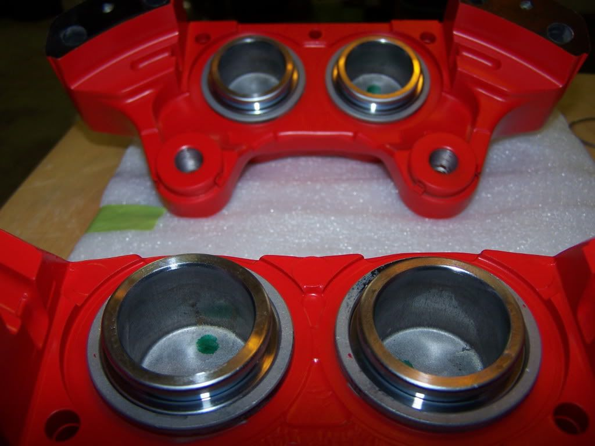

-
Ceramic coated Z32 Calipers and bolts with all brand new genuine Nissan parts:
Last quick cleaning before assembly
All cleaned up and the brand new pistons ready to go:
Lubricated pistons and seals already in:

Dust boots on, ready for assembly:
All done:
-
Where did you get the orings for the fluid galleys?
-
everything from courtesy.vagabond wrote: Where did you get the orings for the fluid galleys? -
[quote]matico40 wrote:They can also be found at Z1 if you have any trouble getting them from Courtesy.Originally posted by vagabond
http://www.z1motorsports.com/product_in … 32b9f5180f
Also, very nice job on the rebuilt Matico! They look great!1986 300ZX Turbo - Sold
1991 Toyota MR2 - RIP
2007 BMW 335i - Daily driver -
Man those calipers look familiar! :lol: Nice work Dany.
. -
were you able to get the o-rings that go between the caliper halves from courtesy?

1988 300zxt. gt35, stance, etc. Wheels: Varrstoen ES2 18x9.5 et-13 225/40. 18x10.5 et0 245/40
1990 jetta vr6'd -
I think listing even just the PN#'s would be helpful.It may not be a Z, but it's still got a turbo… -
I am going to rebuild my 30mm z32 brakes soon. How much did the rebuild run you?DD:
86 Black Turbo 5spd
The Fallen:
84 red n/a auto Slicktop, 86 Black 2+2 n/a 5spd
Parting Currently:
86 White Turbo 5spd, 88 n/a 5spd, 84 AE, 88 Shiro #64
Garage Sale -
[quote]DeleriousZ wrote: were you able to get the o-rings that go between the caliper halves from courtesy?matico40 wrote:everything from courtesy.Originally posted by vagabond -
these are the only things I didn't get because they are not available (we are not suppossed to take the calipers apart).DeleriousZ wrote: were you able to get the o-rings that go between the caliper halves from courtesy?
Some people get o rings at hardware stores but IDK how they cope with brake fluid and such. I re-used the old ones. -
the bill from courtesy was ~$450, but that includes all new 8 pistons.MADMIKE wrote: I am going to rebuild my 30mm z32 brakes soon. How much did the rebuild run you?
Total, I probably spent around $1K for everything, including the messed up powdercoating. -
those were the orings I was referring to also. I had to reuse my old ones. That's why I was curious if there was a new source for them. -
1988 300zxt. gt35, stance, etc. Wheels: Varrstoen ES2 18x9.5 et-13 225/40. 18x10.5 et0 245/40
1990 jetta vr6'd -
One question… Isn't ceramic coating for keeping heat in? Not dissipating heat? Shiro Special # 981 Being assembled in my spare time Chromoly acquired!
Shiro Special # 981 Being assembled in my spare time Chromoly acquired!
Originally posted by BoostedMamma -
F....U....C....K! I wish I would have known....you don't know how much it's bugging me not having "everything" brand new lol

Copyright © 2006–. All rights reserved. Privacy Policy